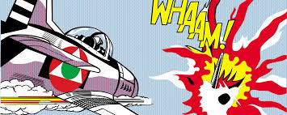
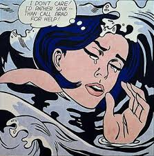

Exploring the life and work of Roy Lichtenstein in a professional museum-style presentation.
Roy Lichtenstein was a leading figure of the Pop Art movement. He became famous for his comic-style paintings using bold lines and Ben-Day dots.


Pop Art emerged in the 1950s and became one of the most influential art movements of the 20th century.